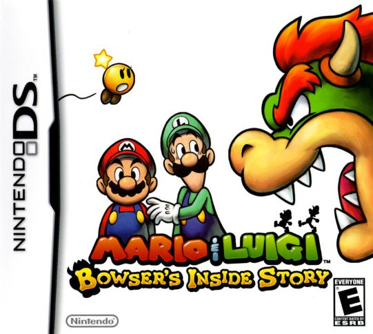
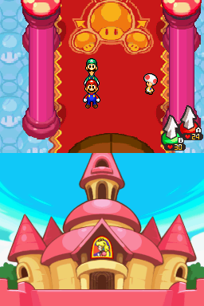
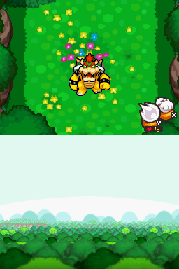
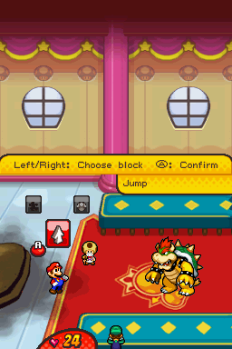
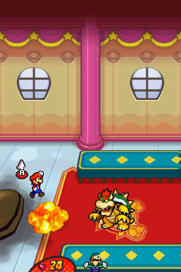

Mario & Luigi: Bowser's Inside Story
Publishing Info
- Published by: NOA Inc.
- Developed by: AlphaDream Corporation
- Released: September 14, 2009
- Platform: Nintendo DS
Game Categories
- Genre: Action, Role Playing Game
- Perspective: Bird's-eye view, Side view
- Pacing: Real-time
- Gameplay: Puzzle elements
- Narrative: Comedic
Description
Mario & Luigi: Bowser's Inside Story is the third game in the Mario & Luigi series of games.
Players control Mario and Luigi simultaneously in the side-scrolling platform environment of Bowser's body,
while also controlling the Koopa King himself in the top-down world of the Mushroom Kingdom.
Similar to games like Earthbound, enemy encounters are seen as actual enemies that players can avoid or attempt to strike early.
The actual battles are a combination of turn-based menu attacks,
and timed reactions to enemies during battle. By watching the way an enemy reacts, you can anticipate their attack and avoid it or counterattack.
Screenshots
  
Quote
A unique story, immersive and varied gameplay, beautiful characters with crazy dialogues, music, graphics and sound that are perfect up to the smallest details, and enough originality to fill ten other games with: those that don't feel like getting this Mario & Luigi: Bowser’s Inside Story better give their DS handheld to someone else.
-- https://www.mobygames.com/mobyrank/source/sourceId,89/